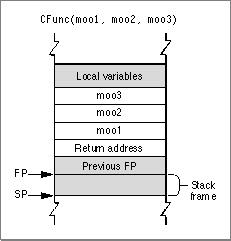

Legacy Document
Important: The information in this document is obsolete and should not be used for new development.
Important: The information in this document is obsolete and should not be used for new development.


SC Compiler C Calling Conventions
As mentioned earlier, the classic 68K runtime environment supports several different C calling conventions. This section describes the C calling conventions used by the SC compiler in the MPW development environment.C allows either a fixed or variable number of parameters to be passed to the called routine. In an ANSI-style C syntax definition, a routine with a variable number of arguments typically appears with ellipsis points (...) at the end of its input parameter list.
A variable-argument function may have several required (that is, fixed) parameters preceding the variable parameter portion. For example, the function definition
mooColor(number,[color1. . .])gives no restriction on the number of color arguments, but you must always precede them with a number argument. Therefore, number is a fixed parameter.Parameters passed by routines are pushed onto the stack from right to left. For example, given the code
cow = CFunc(moo1, moo2, moo3);the calling routine first pushes the value ofmoo3onto the stack, followed bymoo2and thenmoo1, as shown in Figure 11-3.Figure 11-3 Passing parameters onto the stack in C

The return address of the routine is the last item pushed onto the stack.
The calling function is responsible for parameter deallocation (that is, popping parameters off the stack) after the called routine has returned. If the called routine is a function, the function value is normally returned in register D0 (or, for floating-point values, in register F0). In the case of data structures or values larger than 4 bytes, however, the caller must allocate space for the return value and pass a pointer to that storage space as the first (that is, the leftmost) parameter.